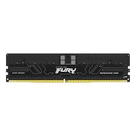
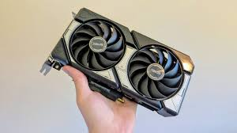
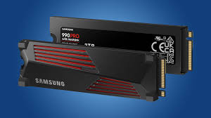
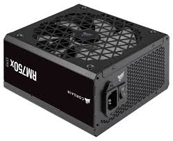

Bitácora
de Laboratorio 2026
Alumno: Ciro Avalos - 5to Año
Diagnóstico de Componentes
Ver Ficha Técnica Completa
Placa Madre
Modelo: ASRock X870E Taichi

Microprocesador
Modelo: AMD Ryzen™ 7 9800X3D Desktop Processor
Arquitectura: 64 bits, x64

Memoria RAM
Capacidad: 64.0 GB instalada (63.4 GB utilizable)

Tarjeta Gráfica (GPU)
Modelo: NVIDIA GeForce RTX 5060 8 GB

Almacenamiento
Tipo: ssd samsung 90 pro/ HDD SATA

Fuente de Alimentación (PSU)
Potencia: 600W 80 Plus Bronze

Sistema de Refrigeración
Tipo: noctua nh-d15 g2

Gabinete (Chasis)
Formato: Mid Tower ATX
Periféricos y Dispositivos E/S
Interfaces físicas de comunicación con el usuario.

Monitor (monitor 4k oled 240hz) (Salida)
Resolución: 3840 x 2160 píxeles 240Hz

Teclado(k552 kumara)
Conectividad: USB / Inalámbrico 2.4GHz

Mouse (g203 logitech)
Conectividad: USB
Auriculares (Salida/Entrada)
Modelo: xyperx cloud 3
Conectividad: Bluetooth
Base de Datos de Conocimiento
Acceso al informe técnico sobre funcionamiento de componentes, arquitectura de buses y resolución de cuellos de botella (Bottlenecks).
Leer Informe Completo de Arquitectura
Armado de Equipos (Presupuestos)
Documentación técnica de presupuestos redactada bajo normas APA.
PC Gaming (Presupuesto Libre)
Enfoque en máximo rendimiento gráfico y sistemas de refrigeración avanzados.
Ver Informe APAPC Oficina (Presupuesto Limitado)
Enfoque en ofimática, durabilidad y mejor relación costo-beneficio.
Ver Informe APAMantenimiento y Laboratorio
Ficha Técnica Final
Mantenimiento preventivo y correctivo de una PC funcional del laboratorio.
Ver Ficha Técnica Final
Soldadura y Desoldadura
Recuperación de componentes electrónicos y reparación de pistas en placas de descarte.
Proyectos Arduino e IoT
Aplicación práctica de programación en C++ y electrónica para resolver problemas del mundo real.

Lentes Asistenciales
Hardware: Microcontrolador ESP32, Sensor Ultrasónico, Buzzer.
Lógica: Detección de proximidad y emisión de alertas sonoras.
Ver Código y Circuito
Basurero Inteligente
Hardware: Placa Arduino, Servomotor, Sensor de Proximidad.
Lógica: Apertura automática del contenedor mediante detección de movimiento.
Ver Código y Circuito